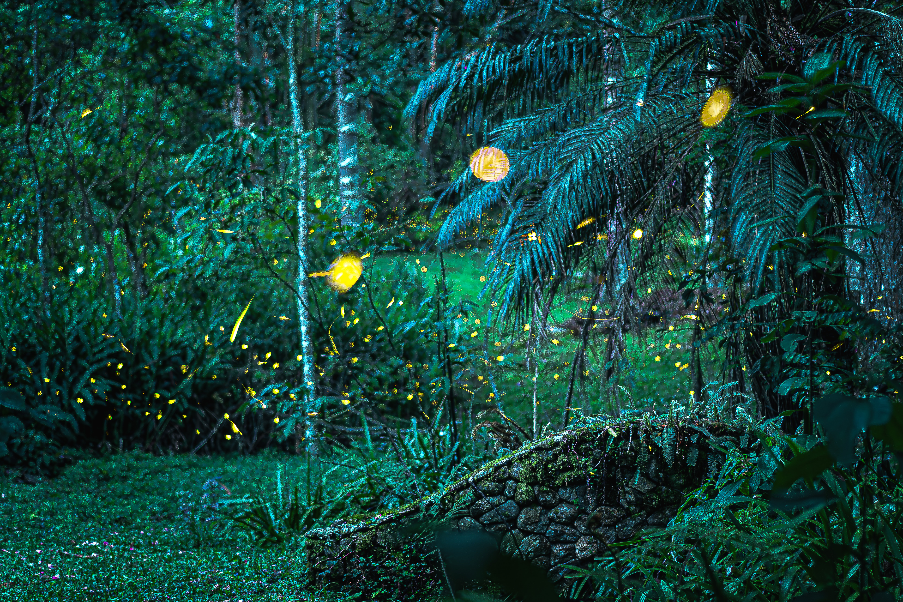

São Bento do Sapucaí · Serra da Mantiqueira
Vinícius Rafael
"A fotografia como uma extensão da montanha,
registrando histórias sob a luz da Mantiqueira."
Muito prazer,
sou o Vinícius
Para os amigos e para quem já trilhou comigo, sou o Vini ou o "Sorriso". Nascido em São Bento do Sapucaí, transformei meu amor pela Mantiqueira em arte.
Sou fotógrafo focado em ensaios, casamentos e eventos esportivos, capturando a alma de cada momento sob a luz autêntica da nossa serra.
Como morador local e guia turístico, apresento segredos da nossa terra que poucos conhecem. Comigo, sua jornada é completa: história na ponta da língua e memórias imortalizadas.
Especialidades
Galeria de Obras


Portfólio
Casamentos
Momentos Eternizados

Aventura
No Coração do Baú
Retratos
Essência e Luz
Fotografia de Rua
O Cotidiano com Alma
Olhar Fotográfico
A Essência do Ver